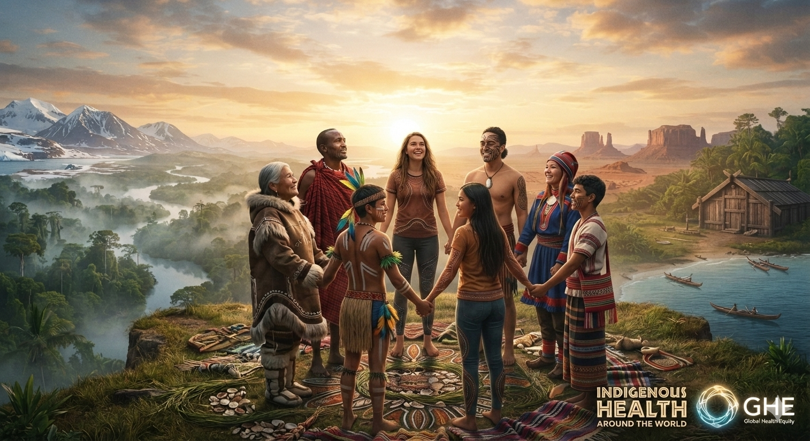

01
Explore
Discover where Indigenous Peoples live and what makes their communities and cultures distinct.
Start here →Indigenous Peoples live across every region of the world. Their communities, cultures, histories, languages and relationships with land are remarkably diverse.
Explore this diversity without losing sight of the connections between health, culture, environment, rights, equity and self-determination.

Indigenous Peoples are not a single population or culture. They include thousands of distinct communities with their own histories, languages, knowledge systems and ways of understanding wellbeing.
Looking around the world helps us appreciate this diversity. It also helps us recognize patterns: the importance of community, connection to land and place, cultural continuity, self-determination and the protection of rights.
A global health explorer learns to hold both ideas at once: Indigenous Peoples are diverse, and health equity is a shared global concern.
When learning about Indigenous Peoples in another country, resist the temptation to assume that one community's experience represents everyone. Ask: Who are the people? Where do they live? What is their history? What do they say about their own health and wellbeing?
Move from discovering Indigenous diversity to understanding global connections and thinking about what respectful leadership can mean.
Discover where Indigenous Peoples live and what makes their communities and cultures distinct.
Start here →Learn about health, culture, rights, environment and Indigenous health systems in different settings.
Learn more →Compare contexts carefully and question assumptions about what makes communities healthy.
Think deeper →Connect Indigenous health with local, national and global systems and responsibilities.
Make connections →Consider how learning from different communities has changed the way you see global health.
Reflect →Turn knowledge into respectful learning, dialogue, advocacy and action.
Take action →From the Arctic to the Pacific, from the Americas to Africa, Asia and the Pacific Islands, Indigenous communities have diverse identities and histories.
Indigenous Peoples live in many different ecological, political and social settings. Some communities live in remote rural areas; others live in cities and towns while maintaining strong cultural and community connections.
Geography matters because health is shaped by place. Climate, food systems, housing, transportation, education, healthcare access and environmental change can all affect wellbeing.
These broad regions are starting points for exploration—not labels that can capture the diversity within them.
Indigenous communities across northern regions have longstanding relationships with land, ice, water, animals and changing environments.
First Nations, Inuit, Métis, Native American and Indigenous peoples across North, Central and South America have distinct identities and histories.
Pacific Indigenous peoples maintain diverse relationships with islands, oceans, ecosystems, community and cultural traditions.
Indigenous communities across Asia experience highly varied social, cultural, environmental and political contexts.
Indigenous peoples and traditional communities across Africa have diverse relationships with land, livelihoods, culture and health.
Indigenous peoples across the region contribute rich knowledge of community, culture, biodiversity and environmental stewardship.
Indigenous health cannot be separated from culture, environment, history, rights and community.
Around the world, Indigenous communities may face very different health priorities. Some experience barriers to healthcare, education, housing, clean water or economic opportunity. Others are developing community-led approaches that strengthen cultural continuity and wellbeing.
Understanding these differences requires attention to both local context and broader systems.
Language, identity, traditions and knowledge can strengthen belonging and wellbeing.
Land, water, climate and ecosystems can influence health, livelihoods and cultural continuity.
Recognition of rights and equitable access to resources are central to health equity.
Community-led solutions can bring local knowledge, priorities and leadership into health action.
Global comparisons can reveal patterns, but they can also create misleading generalizations.
When we compare Indigenous health across countries or regions, we should ask what conditions are different. Governance, history, geography, health systems, climate, economic conditions and relationships with governments can all influence outcomes.
A responsible global health explorer avoids ranking communities as if their circumstances were identical. Instead, we ask what explains differences and what communities themselves identify as priorities.
Comparison should deepen understanding—not reinforce stereotypes.
Always examine context, power, history and whose perspective is represented in the evidence.
Global health begins with understanding our own place in a connected world.
What I know, believe and experience.
The people who shape my understanding of culture, identity and community.
Local relationships, services, knowledge and leadership.
Laws, policies, institutions, history and equity.
Global Indigenous rights, climate, health and solidarity.
The conditions in which people live, learn, work and connect shape health opportunities.
For Indigenous communities, these conditions can be strongly influenced by geography, historical relationships, governance, environmental change, discrimination and access to resources.
Indigenous health is connected to many dimensions of sustainable development, equity and human rights.
Global health leadership requires the ability to see connections while respecting local knowledge, priorities and leadership.
Community knowledge should be part of how health priorities and solutions are understood.
Ask who collected the data, how populations were defined and whose perspectives may be missing.
Avoid treating broad regional categories as if they represented one Indigenous experience.
Health equity grows when local priorities connect with wider movements for justice, sustainability and human rights.
Think about how your understanding changed as you moved from one community or region to another.
Why is it important not to treat Indigenous Peoples as one homogeneous group?
What connections did you notice between health, culture, place and self-determination?
How can global comparisons be useful without becoming stereotypes?
Explore beyond headlines and generalizations. Learn from Indigenous voices, investigate evidence carefully, and recognize the connections between local wellbeing and global health equity.
Continue the Journey